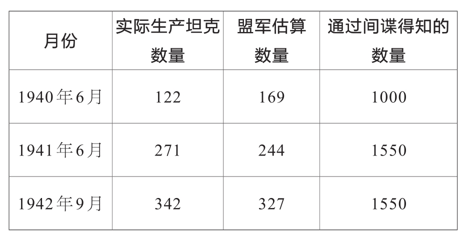

这篇文章和前文一样，在进入“二战”的话题之前，我们先聊些轻松的事情。设想一下，你正在一座大城市出差，这座城市中的所有出租车都依次编号。你站在街口想要打一辆出租车，但一连6辆车都已载客，你注意到这些行驶而过的出租车编号分别为：696、119、864、296、548和431。根据这些信息，你能推算出这座城市里有多少辆出租车吗？
这不是在开玩笑，仅仅根据这些已有的信息就能准确地估计出租车的数量。首先，我们需要建立一个数学模型，并且假设城市中所有出租车按照1、2、3…N的顺序标号，N即城市中出租车的总数，那么求城市中出租车的数量其实就是求N的值。
其次，我们需要假设观察到的这些号码是从1到N完全随机出现的，这意味着：从1到N之间的每一个数在路口出现的概率都是相同的。
如果这些条件都成立的话，N的值就可以根据这个方法估算出答案：我们看到的最大的数是864，用864除以总共观察到的出租车的数量6，再乘以7，得到1008，这便估计出了N的值。这种计算方法可行的原因在于：出租车总量（从1到未知数N）比样本容量n（在这种假设下为6）还多一个“平均间隔”。如果选取抽样数据中的最大值864，再用864除以样本容量n即6，就可以算出抽样数据之间的平均间隔。最后再乘以n+1就可以计算出N的近似值。据此我们便可以初步推算城市中出租车的总量。
这种估算方式无疑是最简单快捷的，此外还有其他各种各样的估算方式。比如，可以估计样本最大值与N之间的间隔——平均来说，由于对称性，样本最大值（Max）与整个数据范围最靠右的值之间的间隔，和样本最小值（Min）与最靠左的值之间的已知间隔相同，即样本最大值与N值之间的间隔和样本最小值与出租车最小编号“1”的间隔相同。
最左侧间隔的大小为（Min－1），这个间隔可用于估算最右侧的最大值N，计算时用Max直接加上间隔大小，即864+119－1=982。虽然按照这种方式估算出来的出租车总数相较于第一种方法要少一点，但这也是一种正确且严谨的估算方法。
我们把这种思路再次延伸，不只是通过最左边的间隔可以估算最右边的间隔（Max与N的间隔），还可以通过样本之间的任意一个间隔来估计N值。从统计学角度来讲，这些间隔围绕着同一个平均值离散分布，因此这些估算结果基本上都与我们采取第一种方法得到的结果一致。
如果一位数学家不能在一个精妙的数学理论上研究出最佳的解题方法，那么他便不能称为数学家。“最佳”首先意味着估算公式能够正确计算出N的大小，即在长期多次的估算中计算得出的未知数的大小既没有被高估也没有被低估，数据本身没有趋向性。我们可以如此理解趋向性：我们买猪肉时，店家会给猪肉过磅。当秤调准后，称出的猪肉的重量并不会过重或者过轻，这就是没有趋向性。但如果卖肉的店家总是故意把大拇指放在秤上，那么多次称出来的重量就会带有明显过重的趋向性。
一个准确的公式还要尽可能地算出未知数真实的大小。也就是说，最佳公式计算出来的结果应该在多次反复的计算中与真实的N值有非常小的偏差。
在我们之前假定的出租车情景中，你也许并不能想出什么好的办法。
我们需要学习很多理论知识，才能得到一个“最佳公式”，这个公式是一个分式，分式的分子是Max(n+1)－(Max－1)(n+1)，分母是同样的形式，只不过指数不是(n+1)，而是n，即Maxn－(Max－1)n。
假设此时最大值Max=864，n=6，得出估算值1007。
事实上，上面提到的6个数是我从1到1000的范围中随机生成的。所以，我们得到1007这个估算值就能从另一方面证明这个“最佳公式”非常准确。
这个估算公式有着重要的现实意义及应用价值。第二次世界大战中，反法西斯联盟费尽力气计算德国军备中军事武器的数量。此外，他们还想得知德国军工企业每年制造多少辆坦克。因此，反法西斯联盟一方面通过派出间谍来获取情报，另一方面借助战争中毁坏的德军坦克的编号来估算德军的坦克总数。
数学家基于抽样组（战争中毁坏的坦克编号）利用上文提到的估算方法估计德国每个月坦克的产量，这就使反法西斯联盟得到了价值连城的军事机密，反法西斯联盟的指挥官可以依此计划生产己方的军备武器并安排战争行动。
“二战”结束后，人们发现了很多有关作战的资料，其中记载了各类武器的数量。此时便可以把利用数学估计出的数据与间谍得到的信息进行比对，验证战争中估算的正确性，事实证明，数学家计算得出的数据非常接近现实。从下面这张表格中可以清楚地看到数学家估算的误差要比间谍获取的情报中的误差小得多：

*表中数据来自鲁格斯·R.与布罗迪·H.（Ruggles, R.& Brodie, H.）（1947）：第二次世界大战中经济情报的实证研究，JASA, 42, 72–91。